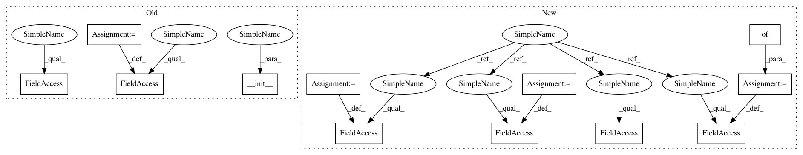

cf1f601ab89d89ec72ba009140470d4689553db1,caserec/recommenders/rating_prediction/user_attribute_knn.py,UserAttributeKNN,__init__,#UserAttributeKNN#Any#Any#Any#Any#Any#Any#Any#Any#,46
Before Change
class UserAttributeKNN(UserKNN):
def __init__(self, train_file, test_file, metadata_file=None, similarity_matrix_file=None, prediction_file=None,
neighbors=30, similarity_metric="correlation", space_type="\t"):
UserKNN.__init__(self, train_file, test_file, prediction_file=prediction_file, neighbors=neighbors,
similarity_metric=similarity_metric, space_type=space_type)
if metadata_file is None and similarity_matrix_file is None:
print("This algorithm needs a similarity matrix or a metadata file!")
sys.exit(0)
if metadata_file is not None:
self.metadata = ReadFile(metadata_file, space_type).read_metadata(self.users)
self.matrix = self.metadata["matrix"]
self.similarity_matrix_file = similarity_matrix_file
def read_matrix(self):
self.su_matrix = ReadFile(self.similarity_matrix_file).read_matrix()
After Change
User-Attribute-kNN predicts a user’s rating according to how similar users rated the same item. The algorithm
matches similar users based on the similarity of their attributes scores. However, instead of traditional UserKNN,
this approach uses a pre-computed similarity matrix based on metadata.
// © 2018. Case Recommender (MIT License)
import numpy as np
from caserec.recommenders.rating_prediction.userknn import UserKNN
from caserec.utils.process_data import ReadFile
__author__ = "Arthur Fortes <fortes.arthur@gmail.com>"
class UserAttributeKNN(UserKNN):
def __init__(self, train_file=None, test_file=None, output_file=None, metadata_file=None, similarity_file=None,
k_neighbors=30, as_similar_first=True, metadata_as_binary=False,
metadata_similarity_sep="\t", similarity_metric="cosine", sep="\t", output_sep="\t"):
User Attribute KNN for Rating Prediction
This algorithm predicts a rating for each pair (user, item) based on the similar items that his neighbors
(similar users) consumed, using a metadata or similarity pre-computed file
Usage::
>> UserAttributeKNN(train, test, similarity_file=sim_matrix, as_similar_first=True).compute()
>> UserAttributeKNN(train, test, metadata_file=metadata, as_similar_first=True).compute()
:param train_file: File which contains the train set. This file needs to have at least 3 columns
(user item feedback_value).
:type train_file: str
:param test_file: File which contains the test set. This file needs to have at least 3 columns
(user item feedback_value).
:type test_file: str, default None
:param output_file: File with dir to write the final predictions
:type output_file: str, default None
:param metadata_file: File which contains the metadata set. This file needs to have at least 2 columns
(user metadata).
:type metadata_file: str, default None
In pattern: SUPERPATTERN
Frequency: 3
Non-data size: 12
Instances
Project Name: caserec/CaseRecommender
Commit Name: cf1f601ab89d89ec72ba009140470d4689553db1
Time: 2018-02-16
Author: fortes.arthur@gmail.com
File Name: caserec/recommenders/rating_prediction/user_attribute_knn.py
Class Name: UserAttributeKNN
Method Name: __init__
Project Name: caserec/CaseRecommender
Commit Name: cf1f601ab89d89ec72ba009140470d4689553db1
Time: 2018-02-16
Author: fortes.arthur@gmail.com
File Name: caserec/recommenders/rating_prediction/user_attribute_knn.py
Class Name: UserAttributeKNN
Method Name: __init__
Project Name: matplotlib/matplotlib
Commit Name: e897855f0db3c4cd9b77e6508d3feb1b4441a363
Time: 2017-10-30
Author: anntzer.lee@gmail.com
File Name: examples/user_interfaces/embedding_in_qt_sgskip.py
Class Name: ApplicationWindow
Method Name: __init__
Project Name: home-assistant/home-assistant
Commit Name: 2e10d7223a935c296cbc51fbb70acd6618eadd0f
Time: 2014-04-24
Author: Paulus@PaulusSchoutsen.nl
File Name: homeassistant/__init__.py
Class Name: Timer
Method Name: __init__